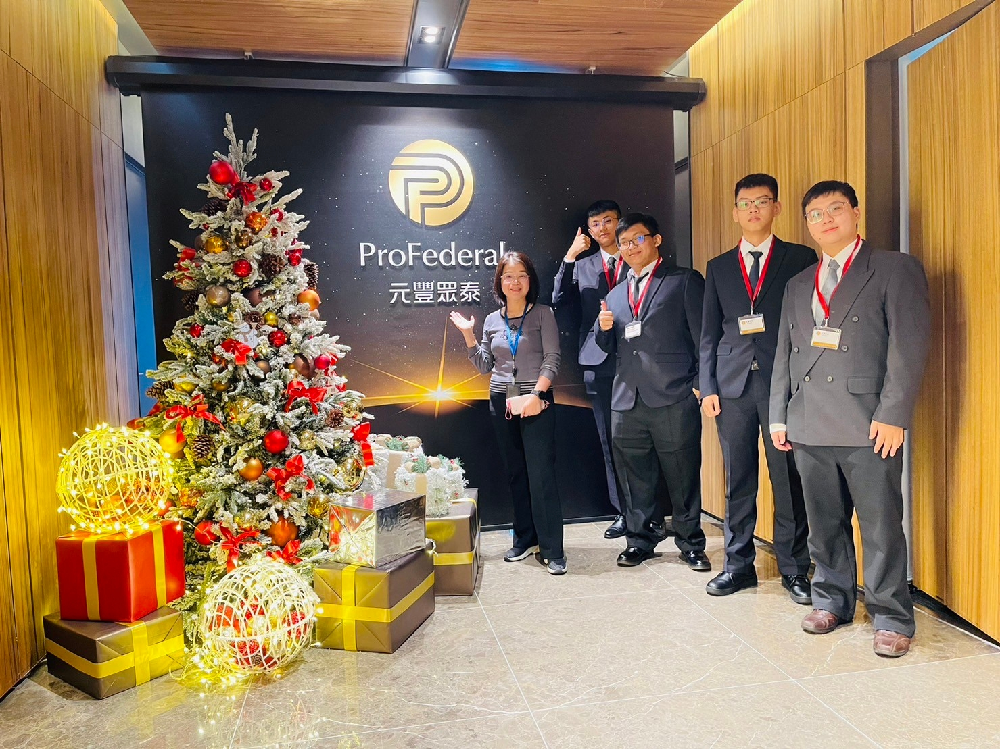

安安的個人網頁

關於我
HI 我是周庭安
目前就讀於國立聯合大學店 資訊管理學系
昨天剛滿20歲
興趣是睡覺與作夢
目標是能夠準時畢業QQ
教育背景
- 國小:後埔國小
- 國中:重慶國中
- 高中:新北高工-資訊科
- 大學:聯合大學-資訊管理學系(就讀中)
技能與證照
- Labview
- C++
- Python
- php
- Piano
- Arduino
- Java
- 數位電子乙級
- 工業電子丙級
- 網路架設丙級
- 電腦軟體設計丙級
- 電腦硬體裝修丙級
- 演奏等級檢定合格證 9級
經驗與實習
偏向課輔系統代班
大二的時候被系上的老師騙進去，在裡面幫助大小學伴解決系統設備相關問題，雖然事情很多、薪水很少，但還是很感謝老師當初給我這個機會，在裡面也認識到了很多學長姐，開拓了我的社交圈。
文章
關於自己
從入學到現在，其實最多的還是感嘆自己能力的不足，與唾棄自己為何如此頹廢，在資管系中，我學到了許多東西，但也容易陷入擺爛的狀態，希望在未來能夠讓自己更加自律與努力，變得更好。
見解
對於自己或資管系的獨到見解，我認為要跟上AI的潮流，必須要強迫自己一直學習新東西，才不會被時代拋下。
製作專案

獲獎與榮譽
- 第50屆全國技能競賽 機器人職種 北區分區賽 佳作
- 參加108學年度合作盃國語文暨母語競賽 國語朗讀(二、三)年級組 第一名
- 1090315梯次 全國高級中等學校閱讀心得比賽 佳作
- 1100315梯次 工程技術類小論文 甲等
活動照片
台中班遊
偏鄉課輔
企業參訪

有事想找我?
- Email：[U1033125@o365.nuu.edu.tw]
- 電話：[不公開]